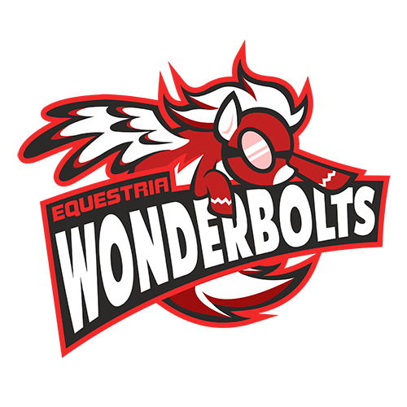

Название вашей команды
Российская киберспортивная организация по дисциплине, "DOTA2", основанная Алексеей "S0mbrrero" Каташевым в декабре 2016г. Свой наилучший результат команда показала в 2018г, к тому времени Алексей передал роль капитана Максиму "STAYHOMEALONE" Владимирову, также Максим стал совладельцем команды. Каташев остался в составе, но так же выполнял роль менеджера клуба. В этом же году состав был распущен, причиной служит семейные обстоятельства Алексея и не желания двигаться в одиночку Максима